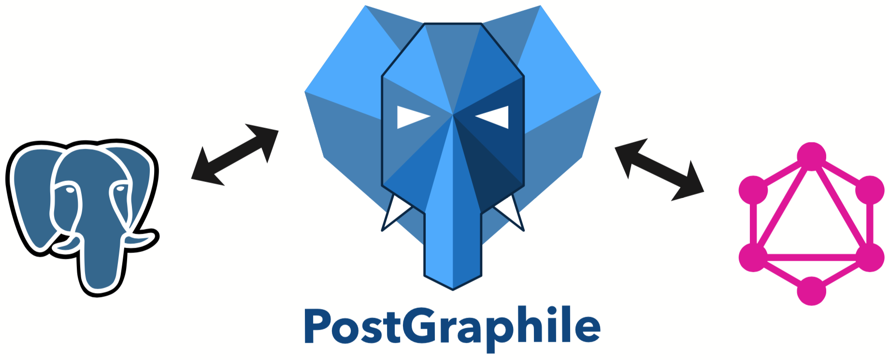
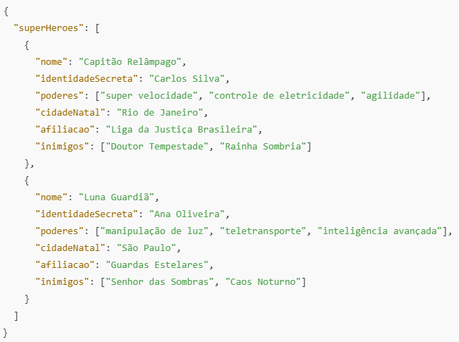
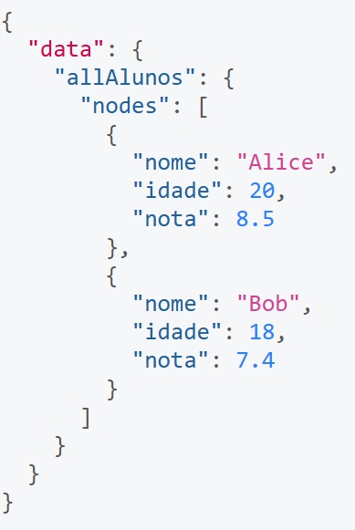
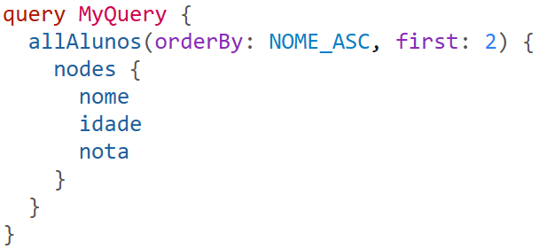
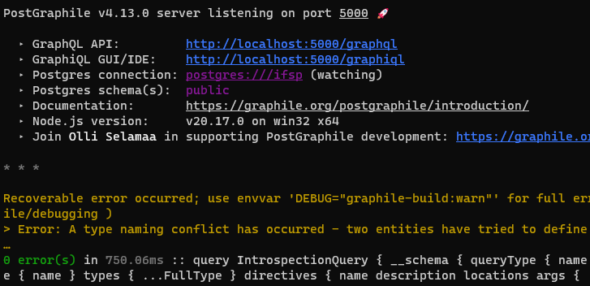
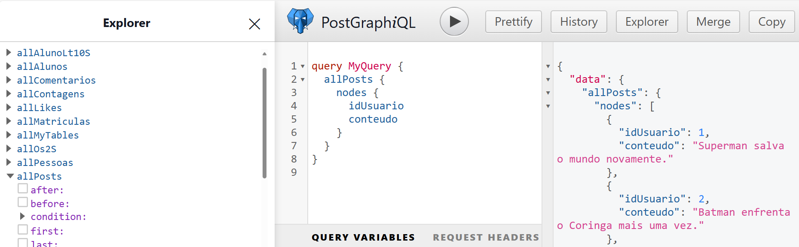

Contexto
Problema
Segurança
Expondo o banco de dados por uma API
Slide visual do material original.
Expondo por meio de uma API
PostGraphile

Gerador automático de API tipo GraphQL
JSON: JavaScript Object Notation
JSON

Exemplo consulta GraphQL



Instalando e rodando o PostGraphile

Banco de Dados
Requisitos
Após instalar o node
Rodando o PostGraphile
O PostGraphile vai se conectar ao SGBD, então vamos rodar o comando no cmd
postgraphile -c postgres://<usuario>:<senha>@<endereco>/<nome_banco> --enhance-graphiql --cors --watch

Rodando o PostGraphile
postgraphile -c postgres://<endereco>/<nome_banco> --enhance-graphiql --cors --watch
graphiql

Criando uma consulta no navegador
Para realizarmos a consulta em javascript podemos fazer o seguinte fetch
Podemos colocar isso em um site e utilizar os dados da consulta!
Slide visual do material original.
Prática!
Slide visual do material original.
Prof. Caio Hamamura
Bons estudos!